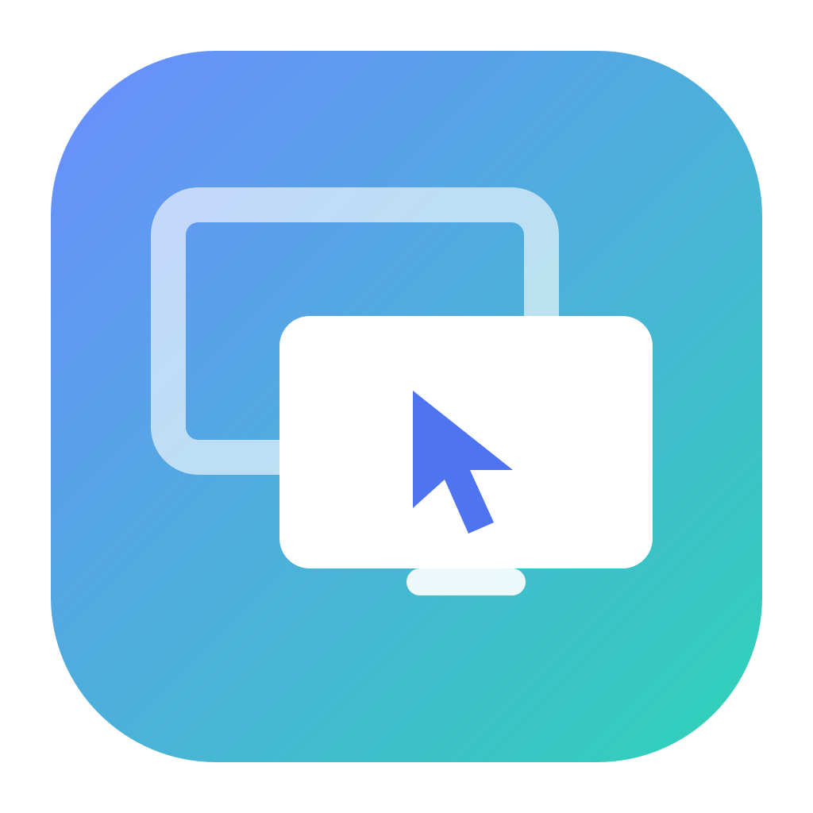

OmniDeskEvery screen you own,
on one desk.
See all your computers live, side by side. Click one and your keyboard and mouse work on it. Copy on one, paste on another.
Free. Windows 10/11, macOS 11 or later, Linux. Updates itself.
All screens, live
Every paired computer and every monitor it has, on one page.
Control any of them
Click a screen. Your mouse, keyboard and scroll wheel now work there.
One clipboard
Copy text on your PC and paste it on your Mac.
Private
Devices talk directly on your own network, encrypted. No accounts, no servers.